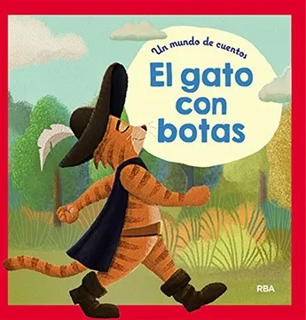

El gato con botas
Protagonista del cuento. Es un gato que puede hablar y posee una inteligencia extraordinaria. Utiliza su astucia, sus engaños y su habilidad para planear con el objetivo de mejorar la vida de su dueño.

AVENTURAS · FANTASÍA · CUENTO CLÁSICO
Un joven molinero recibe como herencia únicamente un gato. Aunque al principio cree que no tiene ningún valor, pronto descubre que su mascota es extraordinariamente inteligente. Con un par de botas, una bolsa y mucha astucia, el gato emprende una serie de aventuras para cambiar la vida de su dueño.
El gato con botas
Le Maître chat ou le Chat botté
Charles Perrault
1697
Francia
Narrativo
Cuento maravilloso
Historias o cuentos de tiempos pasados, conocidos como Cuentos de mamá ganso
El gato con botas, el hijo menor del molinero, el rey, la princesa y el ogro
Astucia, aventura, ambición, ingenio, apariencia y ascenso social
La historia comienza cuando un molinero fallece y deja sus bienes como herencia a sus tres hijos. El mayor recibe el molino, el segundo obtiene un burro y el menor solamente recibe un gato.
El hijo menor se siente decepcionado porque considera que su herencia no le permitirá sobrevivir. Sin embargo, el gato demuestra que puede hablar y le pide una bolsa y un par de botas. Le promete que podrá ayudarlo a mejorar su situación.
El gato comienza a utilizar su inteligencia para conseguir alimentos y regalos. Después de atrapar algunas presas, las lleva al rey y asegura que son obsequios de su amo, a quien presenta con el título inventado de marqués de Carabás.
Con el paso del tiempo, el gato consigue que el rey se interese por aquel supuesto noble. Más adelante, organiza un encuentro entre su dueño y la familia real cuando el rey viaja acompañado de su hija.
El gato le indica a su dueño que se bañe en un río. Cuando pasa la carroza real, el gato pide ayuda y afirma que su amo ha sido víctima de un robo. El rey ordena que le proporcionen ropa elegante, lo que hace que el joven parezca un verdadero noble.
Después, el gato corre por delante de la carroza y convence a los campesinos de que digan que las tierras pertenecen al marqués de Carabás. De esta manera, logra impresionar al rey con la aparente riqueza de su dueño.
Finalmente, el gato llega a un castillo perteneciente a un poderoso ogro. El animal descubre que el ogro tiene la capacidad de transformarse en diferentes criaturas. Entonces, utiliza su astucia para convencerlo de convertirse en un ratón.
Cuando el ogro se transforma, el gato lo atrapa y se lo come. Después presenta el castillo como propiedad del marqués de Carabás. Impresionado por la riqueza del joven, el rey acepta que se case con la princesa. Así, gracias a los engaños y la inteligencia del gato, su dueño alcanza una posición social elevada.
Protagonista del cuento. Es un gato que puede hablar y posee una inteligencia extraordinaria. Utiliza su astucia, sus engaños y su habilidad para planear con el objetivo de mejorar la vida de su dueño.
Joven que recibe un gato como única herencia. Al principio se siente desanimado, pero termina confiando en los planes de su mascota. Es presentado como el marqués de Carabás.
Gobernante del reino. Recibe los regalos del gato y llega a creer que su dueño es un noble muy rico. Finalmente acepta el matrimonio entre el joven y su hija.
Hija del rey. Conoce al supuesto marqués de Carabás durante el recorrido en la carroza. Su matrimonio con el joven representa el cambio de posición social del protagonista.
Ser fantástico que vive en un castillo y posee grandes riquezas. Tiene la capacidad de transformarse en distintos animales, pero termina siendo engañado por el gato.
Trabajadores que aparecen durante el recorrido del rey. El gato los convence de afirmar que las tierras pertenecen al marqués de Carabás, contribuyendo a su plan.
El gato utiliza su inteligencia para resolver problemas y superar obstáculos. Sus planes impulsan el desarrollo de la historia.
El gato recorre distintos lugares, se encuentra con el rey, convence a campesinos y enfrenta a un ogro en su castillo.
El cuento presenta un gato que habla, un ogro capaz de transformarse y situaciones maravillosas que no ocurren en la realidad.
El gato con botas es principalmente un cuento maravilloso, pero también presenta características de la narrativa de aventuras. Su protagonista emprende una serie de acciones para alcanzar un objetivo: transformar la situación económica y social de su dueño. Durante el relato, el gato realiza viajes, enfrenta desafíos, utiliza su ingenio y supera a un poderoso adversario.
Has llegado al final de nuestra Galería de Subgéneros Narrativos. A través de películas y cuentos, exploramos distintas formas de contar historias, desde el misterio y la ciencia ficción hasta la fantasía, la historia y las aventuras. ¡Gracias por explorar este universo narrativo!
VER TODA LA GALERÍA → VOLVER AL INICIO